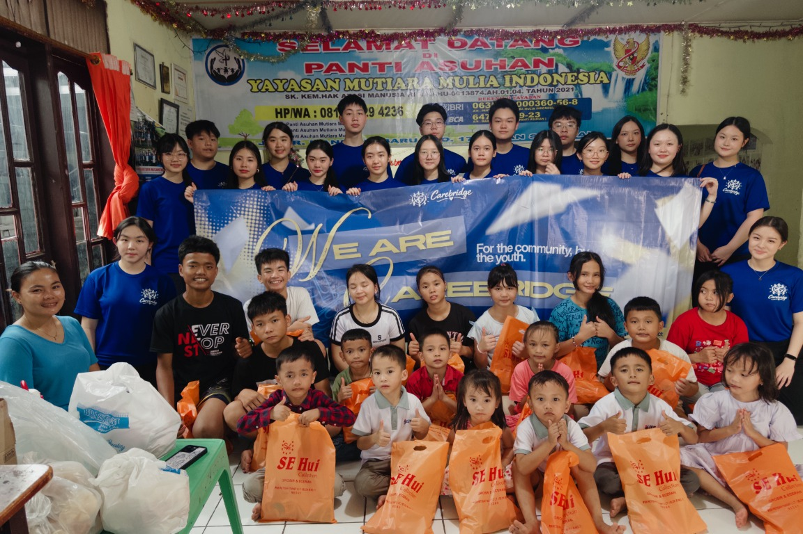
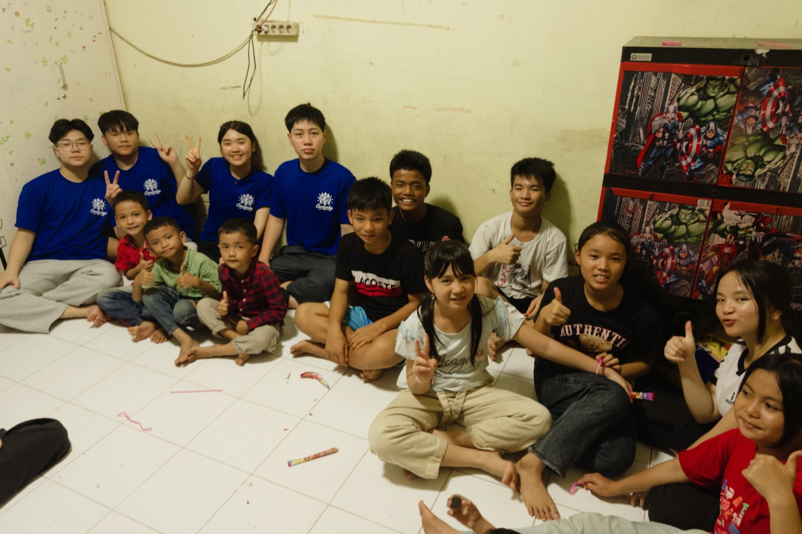
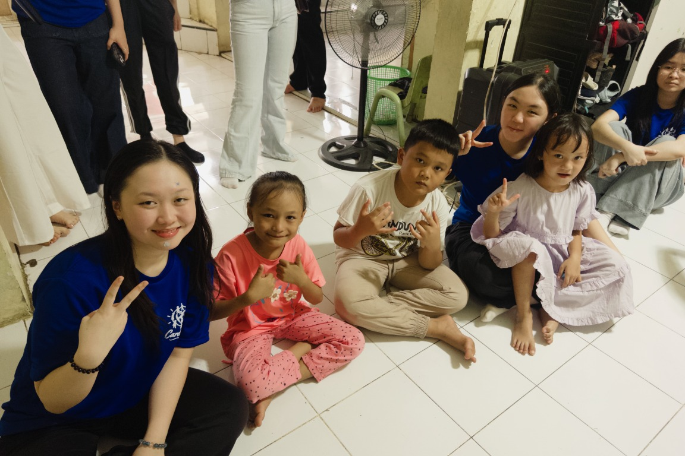
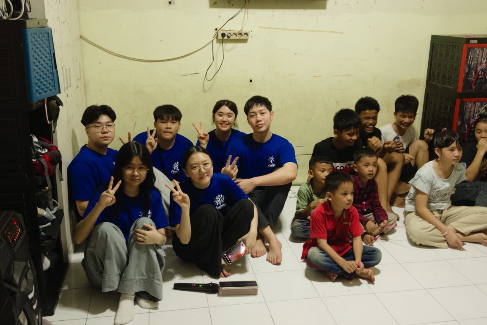
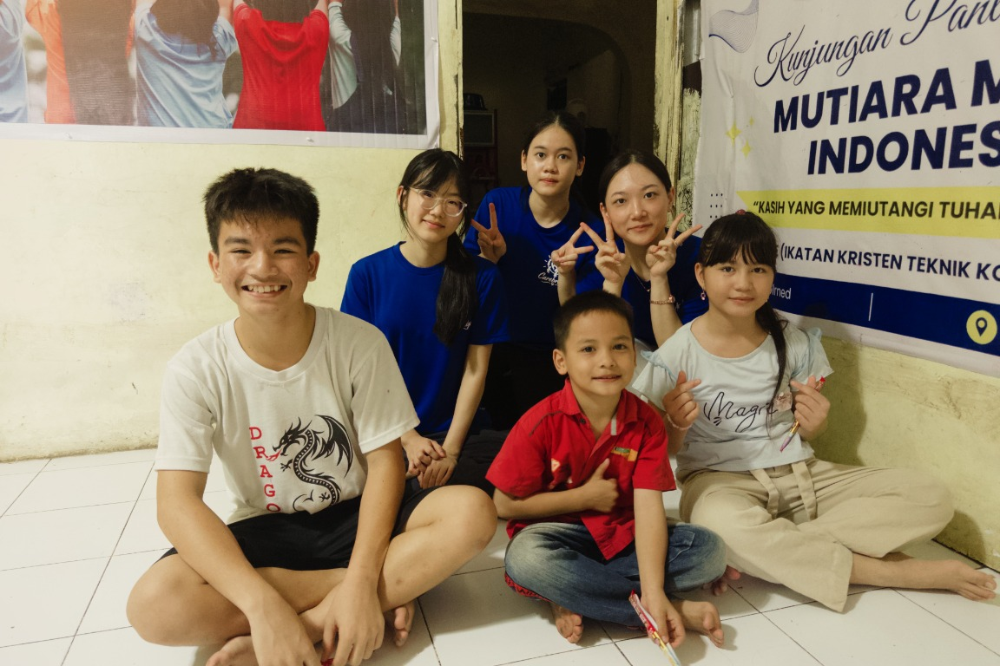

Project 01
Panti Asuhan Mutiara Mulia
For our first project, Carebridge members visited Panti Asuhan Mutiara Mulia with monetary aid and plenty of energy to share.
We spent time together through activities like senam and singing. The visit was a joyful first step, made possible by everyone who supported us.
Support future projects